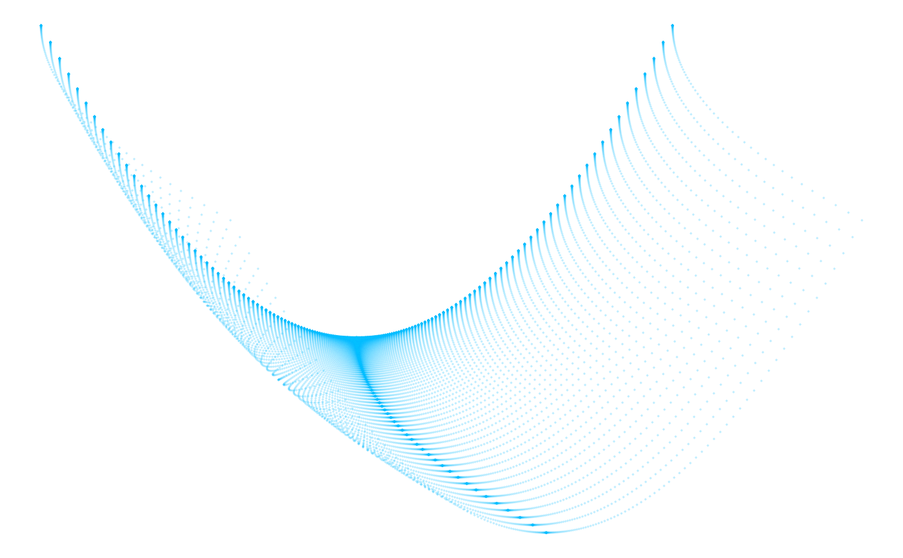

Create curved generative plots.
gemm_curves(
pts_min = -3,
pts_max = 3,
by = 0.01,
random_min = -1,
random_max = 1,
random_min_y = NULL,
random_min_x = NULL,
random_max_y = NULL,
random_max_x = NULL,
exponent_min = 1,
exponent_max = 4,
exponent_min_y = NULL,
exponent_min_x = NULL,
exponent_max_y = NULL,
exponent_max_x = NULL,
alpha = 0.1,
size = 0,
color = sample(grDevices::colors(), 1),
fun = switch(sample(1:3, 1), sin, cos, tan),
xfun = NULL,
yfun = NULL,
polar = sample(c(TRUE, FALSE), 1),
save_args = NULL,
seed = NULL
)| pts_min, pts_max, by | Arguments determining the initial values for points in the x and y directions (generated via `seq(pts_min, pts_max, by)`). |
|---|---|
| random_min, random_max, random_min_y, random_min_x, random_max_y, random_max_x | The minimum and maximum values that will be used to generate "seed" multipliers. If the x- and y- variants are NULL, they will inherit from the untagged variants. |
| exponent_min, exponent_max, exponent_min_y, exponent_min_x, exponent_max_y, exponent_max_x | The minimum and maximum values that will be used to generate exponential multipliers. If the x- and y- variants are NULL, they will inherit from the untagged variants. |
| alpha, size, color | Arguments passed to [ggplot2::geom_point]. |
| fun, xfun, yfun | The function to be applied to generate point values. If the x- and y- variants are NULL, they will inherit from the untagged variant. |
| polar | Logical: use `coord_polar`? |
| save_args | A list of arguments to pass to `ggsave`. If NULL, plots are not saved. |
| seed | The random seed to use. |
A ggplot2 object.
Positions for each point are generated via the following process. First, an evenly-spaced grid of points is created via the call: `seq(pts_min, pts_max, by) then adjusted via `xseed * x^xexp - xfun(y^yexp)`, where `xseed` is a random value set by `runif(1, random_min_x, random_max_x)`, `xexp` is a random integer set by `sample(seq(exponent_min_x, exponent_max_x, 1), 1)`, and `yexp` a random integer set by the same call using the `exponent_min_y` and `exponent_max_y` values. y values are then set via a similar call of `yseed * y^yexp - yfun(x^xexp)`. Points are then plotted via [ggplot2::geom_point] using the provided `alpha`, `size`, and `color` values.
gemm_curves(-1, 1, seed = 125, polar = FALSE)
